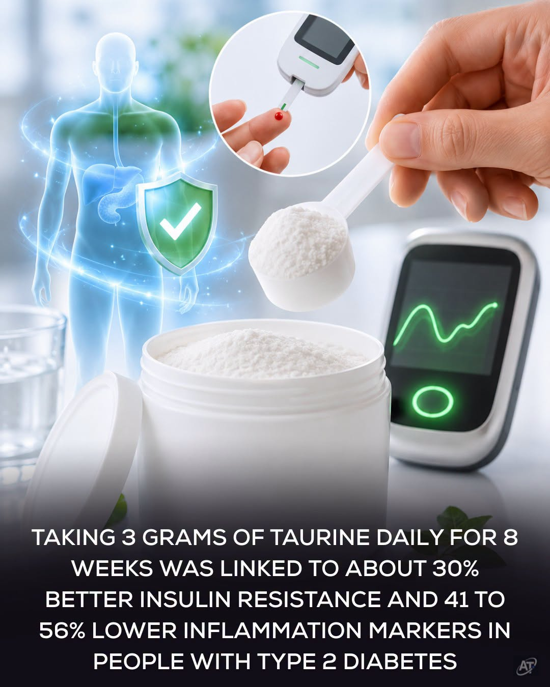

Link to full study:
Paper · Nutr Metab (Lond) · 2022Protective and therapeutic effectiveness of taurine supplementation plus low calorie diet on metabolic parameters and endothelial markers in patients with diabetes mellitus: a randomized, clinical trial.Conclusion: The evidence from our study revealed that Taurine supplementation significantly reduced insulin and HOMA-IR, as well as oxidative stress, inflammation, and endothelial markers in individuals with T2DM. Trial registration The protocol of the study was recorded in the Iranian Registry of Clinical Trials (IRCT20180712040438N3).pmc.ncbi.nlm.nih.gov
Quoted from the abstract:
"After 8 weeks, Taurine-supplemented patients had a considerable decrease in serum insulin and HOMA-IR compared to placebo group. However, Taurine supplementation did not improve other metabolic parameters including lipid profiles, glycated hemoglobin, and fasting blood glucose (FBG). There was a significant decline in MDA, TNF, and hs-CRP levels after these eight-week period of Taurine supplementation. In addition, the Taurine group had fewer serum levels of endothelial dysfunction markers than the placebo group [indicating improved endothelial function]."
#taurineHD #insulinHD #homairHD #insulinresistanceHD #endotheliumHD #diabetesHD #tnfalphaHD #hscrpHD #inflammationHD #glucoseHD #mdaHD #ican1HD #vcamHD #mmp9HD
A clinical trial found that 3 grams of taurine a day improved insulin resistance and several inflammation-related markers in people with type 2 diabetes, but it did not significantly lower their fasting blood sugar or HbA1c.
In the 2022 randomized clinical trial, researchers enrolled 120 adults with type 2 diabetes. Everyone continued their usual oral diabetes medications and followed a moderately calorie-restricted diet.
Half received 1 gram of taurine three times a day, 3 grams total, while the other half received a placebo for eight weeks.
At the end of the study, the taurine group showed significantly lower fasting insulin and improved HOMA-IR, a research measure used to estimate insulin resistance.
Researchers also found reductions in several biomarkers associated with inflammation and oxidative stress, including TNF, high-sensitivity CRP, and malondialdehyde (MDA).
Another interesting finding involved three markers associated with dysfunction of the blood-vessel lining: ICAM-1, VCAM, and MMP-9. Their levels were significantly lower in the taurine group than in the placebo group.
But the results had important limits.
Despite the improvements in insulin resistance and biomarkers, taurine did not significantly improve fasting blood glucose, HbA1c, cholesterol, or triglycerides in this particular eight-week trial.
That distinction matters. Lowering inflammatory or vascular biomarkers does not automatically mean someone has reduced their risk of heart attack, diabetes complications, or other clinical outcomes.
Later reviews combining multiple randomized trials have also reported potentially beneficial effects of taurine on several cardiometabolic markers, but results vary between individual studies, and larger, longer-term trials are still needed.
So, taurine is an interesting area of metabolic research, not a replacement for diabetes medication, nutrition, exercise, or established medical care.
Sometimes the most interesting result is not a dramatic drop in blood sugar, but a clue about what may be changing underneath it.
